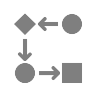

Overview


fmdtools (Fault Model Design tools) is a Python library for modelling, simulating, and analyzing the resilience of complex systems. With fmdtools, you can (1) represent system structure and behavior in a model, (2) simulate the dynamic effects of hazardous scenarios on the system, and (3) analyze the results of simulations to understand and improve system resilience.
Click here to view the the full documentation website.
About
The fmdtools library provides the computational support needed to perform a simulation-based (rather than document-based) hazard analysis process that enables the consideration of systems resilience. This means that it can be used to extend the scope of hazard analysis from component faults to the dynamic interactions between the system, operators, and the environment. Some key features include:
Flexible Modelling Paradigm
Models in fmdtools use a consistent and composable representation of system structure and behavior. Whether you want to model a simple component, a complex system-of-systems, or both, fmdtools can help.
Powerful Simulation Techniques
Simulation techniques in fmdtools represent the state-of-the-art in dynamical systems modelling for resilience quantification. With fmdtools, you can simulate the dynamic effects of hazardous scenarios over a wide range of variables to quantify and optimize risk, resilience, and safety metrics.
Efficient Analysis Process
Readily-deployable analysis methods are built in to fmdtools to enable the rapid and iterative statistical analysis of simulation results. With fmdtools, you can easily leverage our existing methods to understand simulation results instead of spending hours implementing your own.
The fmdtools documentation repository is also home to the Functional Reasoning Design Language specification, a graphical language that may be used to represent the structure of behavioral interactions in a system to inform hazard analysis.
Getting Started
Python version compatibility
The fmdtools library is developed in Python 3.13 but is tested to maintain compatibility over three versions of Python. See current doctest reports below:
Python Version |
Doctests |
|---|---|
3.11 |
|
3.12 |
|
3.13 |

{kind=link}
{kind=link}
{kind=link}
Further (functional and integration) tests are performed in the Python 3.13 to ensure that examples run as desired. Thus, it is generally reccommended to use Python 3.13 with this version to keep pace with development, especially when running examples.
Set up python tooling environment
The fmdtools library was developed to run in a python development environments.
If you do not have an existing python environment, first download and install anaconda or uv.
After the base installation, set up a new Python 3.13 environment for fmdtools and install these external external packages in it:
spyder-kernels
# used for: working with external IDEs
# license: ()
# install from: (comes with anaconda) or `uv pip install spyder-kernels`
jupyter notebook
# used for: repository notebooks
# license: (BSD-3) https://jupyter.org/governance/projectlicense.html
# install from: (comes with anaconda) or `uv pip install jupyter`
graphviz
# used for: plotting graphs using graphviz
# license: (CPL 1.0) https://graphviz.org/license/
# install from: https://anaconda.org/anaconda/graphviz or https://graphviz.org/download/
From there, it can be helpful to install an IDE like VSCode or Spyder.
Note: On Windows, some versions fmdtools dependencies may require a compiler such as that provided with Microsoft Studio Build tools to build, so it (while not required) may be helpful to install it also.
Install fmdtools
For use of fmdtools as an external library, the toolkit can be installed directly from the PyPI package repository using pip install fmdtools.
Editable Development Install
For development as well as interactive use of tutorials and models, we reccomend creating an editable development install.
For this installation, fmdtools can be downloaded from the fmdtools github repository using:
git clone https://github.com/nasa/fmdtools.git
This may then be installed using:
pip install -e "/path/to/fmdtools"
Note that this version reflects the latest version on the main git branch along with any local changes. To use a particular version of fmdtools you can checkout the tag corresponding to the version you want, e.g.:
git checkout v2.2.0
Dependencies
fmdtools requires Python 3.13 and depends directly on the packages below (see requirements.txt). Note that the use of these depencencies is governed by their respective licences, which may be obtained at the provided links.
scipy
# license: (BSD-new) https://www.scipy.org/scipylib/license.html
tqdm
# license: (mixed MPL/MIT) https://github.com/tqdm/tqdm/blob/master/LICENCE
networkx
# license: (BSD-new) https://raw.githubusercontent.com/networkx/networkx/master/LICENSE.txt
numpy < 2.0
# license: (BSD) https://numpy.org/doc/stable/license.html
matplotlib
# license: (mixed) https://matplotlib.org/stable/users/license.html
pandas
# license: (BSD 3-clause) https://pandas.pydata.org/pandas-docs/stable/getting_started/overview.html#license
ordered-set
# license: (MIT) https://github.com/rspeer/ordered-set/blob/master/MIT-LICENSE
dill
# license: (MIT) https://github.com/uqfoundation/dill/blob/master/LICENSE
recordclass == 0.22.1
# license: (MIT) https://github.com/intellimath/recordclass/blob/main/LICENSE.txt
pytest
# license: (MIT) https://docs.pytest.org/en/7.3.x/license.html
graphviz
# license: (MIT) https://github.com/xflr6/graphviz/blob/master/LICENSE.txt
shapely
# license: (BSD 3-clause) https://github.com/shapely/shapely/blob/main/LICENSE.txt
Since these are direct dependencies, they will be installed automatically along with fmdtools.
Some additional indirect dependencies (listed below) may be needed for development/testing of the code, or for specific notebooks. Thus, to develop/contribute to fmdtools, it can be helpful to install these up-front using pip install packagename. Note that the use of these dependencies is governed by their respective licenses, which may be obtained at the provided links.
deap
# used for optimization of rover faults
# license: (LGPL-3.0) https://github.com/DEAP/deap/blob/master/LICENSE.txt
# the LGPL license and installation instructions are provided in ~/examples/rover/readme.rst
pymoo
# used for optimization of tank and rover examples
# license: (Apache 2.0) https://github.com/anyoptimization/pymoo/blob/main/LICENSE
scikit-learn
# used for rover mode notebook
# license: (BSD-3 Clause) https://github.com/scikit-learn/scikit-learn?tab=BSD-3-Clause-1-ov-file#readme
nbmake
# used for notebook tests
# license: (Apache 2.0) https://github.com/treebeardtech/nbmake/blob/main/LICENSE
pytest-html
# used for development test report generation
# license: (MPL-3) https://github.com/pytest-dev/pytest-html/blob/master/LICENSE
coverage
# used for measuring test coverage
# license: (Apache 2.0) https://github.com/nedbat/coveragepy/blob/master/NOTICE.txt
pytest-cov
# used for measuring test coverage
# license: (MIT) https://github.com/pytest-dev/pytest-cov/blob/master/LICENSE
genbadge
# used for generating test badges for the README
# license: (BSD 3-Clause) https://github.com/smarie/python-genbadge/blob/main/LICENSE
multiprocess
# used for parallism tutorial profiling
# license: (BSD-3 Clause) https://github.com/uqfoundation/multiprocess/blob/master/LICENSE
pathos
# used for parallelism tutorial profiling
# license: (BSD-3 Clause) https://github.com/uqfoundation/pathos/blob/master/LICENSE
adjustText
# used for taxiway visualizations
# license: (MIT) https://github.com/Phlya/adjustText?tab=MIT-1-ov-file#readme
One fmdtools is installed, you should be able to run:
import fmdtools
To check the version of fmdtools, you can run the following:
import importlib.metadata
importlib.metadata.version("fmdtools")
which should return the current version of fmdtools.
If a development install has been performed, you can further check aspects of your installation by running run_all_tests.py and opening the corresponding test report in /reports/junit/report.html to see if all tests pass (or, are consistent with the current test report).
Explore Tutorials and Resources
Once fmdtools is installed, use the following to get acquainted with how to use the library:
Go through the Intro to fmdtools workshop to learn about some of the basics of the fmdtools library and work with an existing model.
Explore more examples of particular use-cases by going through the examples folder
Read about contributions and model development best practices by perusing the Development Guide.
Explore the searchable module reference for syntax and usage documentation.
Contributions
fmdtools is developed primarily by researchers at NASA Ames Research Center. External contributions are welcome under a Contributor License Agreement:
Contributors
See: CONTRIBUTORS.md
Citing this repository
To cite fmdtools in general, you may cite our explanatory publication:
@article{hulse2021fmdtools,
title={fmdtools: A fault propagation toolkit for resilience assessment in early design},
author={Hulse, Daniel and Walsh, Hannah and Dong, Andy and Hoyle, Christopher and Tumer, Irem and Kulkarni, Chetan and Goebel, Kai},
journal={International Journal of Prognostics and Health Management},
volume={12},
number={3},
year={2021}
}
To cite a particular version of the fmdtools, you may use:
@software{nasa2025fmdtools,
author = {{NASA}},
title = {fmdtools},
url = {https://github.com/nasa/fmdtools},
version = {2.2.0},
date = {2025-6-6},
}
To cite a particular fmdtools example use the relevant reference provided in the in accompanying README file for the example. To cite a given published research methodology embodied by fmdtools, see our publication list.
License/Notices
Copyright © 2024, United States Government as represented by the Administrator of the National Aeronautics and Space Administration. All rights reserved.
The Fault Model Design tools - fmdtools version 2 software is licensed under the Apache License, Version 2.0 (the “License”); you may not use this application except in compliance with the License. You may obtain a copy of the License at http://www.apache.org/licenses/LICENSE-2.0.
Unless required by applicable law or agreed to in writing, software distributed under the License is distributed on an “AS IS” BASIS, WITHOUT WARRANTIES OR CONDITIONS OF ANY KIND, either express or implied. See the License for the specific language governing permissions and limitations under the License.
TABLE OF CONTENTS
- Overview
- Development Guide
- Why fmdtools?
- Introductory Tutorial
- Glossary
- Model Development Best Practices
- Pay attention to and document the fmdtools version
- Plan your model to avoid technical debt
- Make and FRDL Diagram First
- Don’t copy, inherit and functionalize
- Document your code, sometimes before your write it
- Don’t get ahead of yourself–try to get a running simulation first
- Preserve your prototype setup by formalizing it as a test
- Edit your code
- Structuring a model
- Use model constructs to simplify your code
- Style advice
- See also
- Examples
- Module Reference
- Contributions
- FRDL